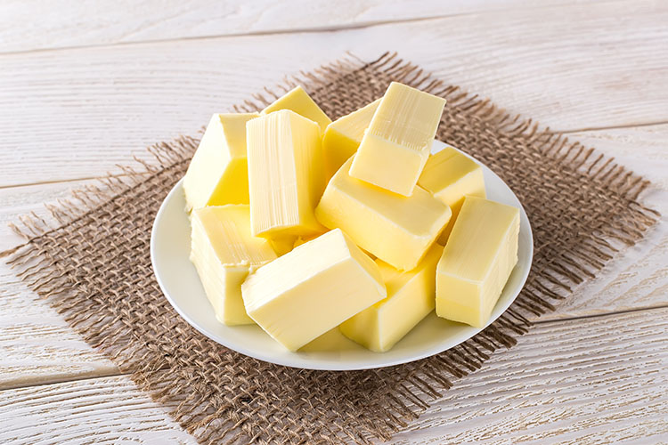
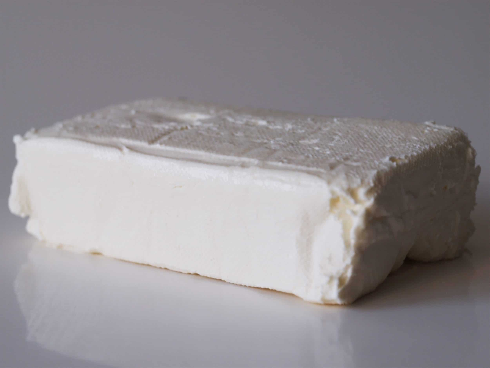
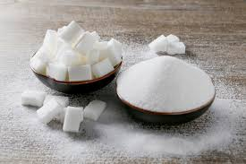
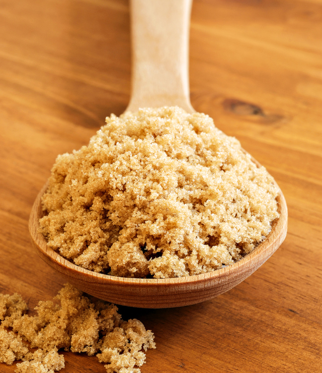
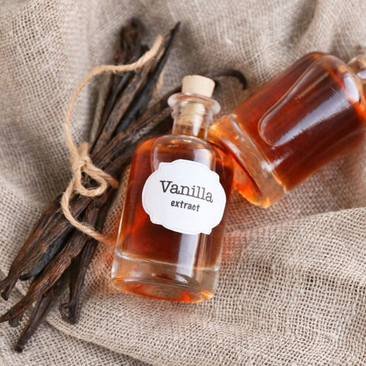
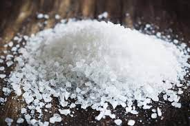
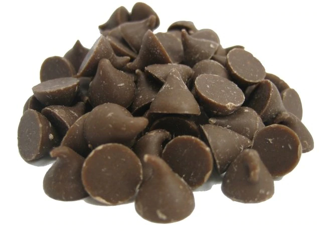
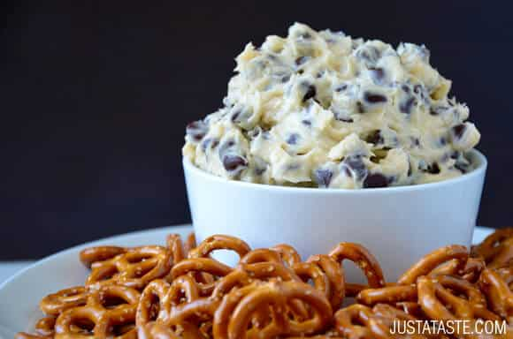

| Ingredient Name | Amount | Picture of Ingredient |
|---|---|---|
| Unsalted Butter | 1/2 cup (1 stick) |  |
| Cream Cheese | 8 oz. |  |
| Sugar | 1/3 cup |  |
| Light Brown Sugar | 1/4 cup |  |
| Vanilla Extract | 2 1/2 teaspoons |  |
| Salt | 1/2 teaspoon |  |
| Semisweet Chocolate Chips | 1 1/2 cups |  |
| In the bowl of a stand mixer fitted with the paddle attachment, cream together the butter, cream cheese and sugars until combined, about 2 minutes. Add the vanilla and salt and continue mixing then add the chocolate chips and blend just until combined. Serve the dip with pretzels or fruit for dipping. |
||
|  | ||